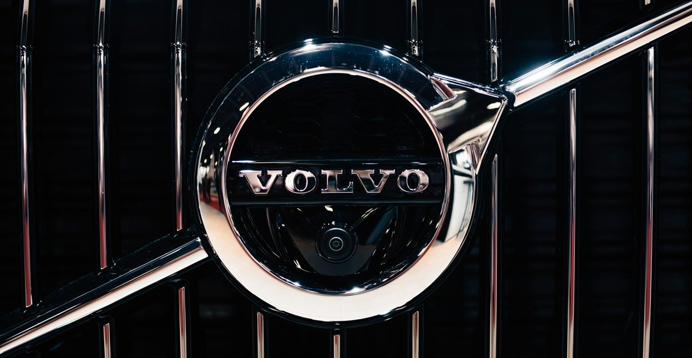

Мой автомобиль
Мой автомобиль
Ваш автомобиль
Сфотографируйте табличку VIN или техпаспорт — я определю марку, модель, год и двигатель. Ручной ввод — запасной путь.
ЭРА · Эксплуатация и ремонт автомобиля
Volvo
XC60

Обращения
ТО · Volvo XC60 2013
ТО-4: масло, фильтры, тормозная жидкость
Подобрал исполнителя: ХАБ Гродно (проверено), он уже знает историю автомобиля. Слот — четверг 14.11, 10:00. Состав по регламенту производителя: масло 0W-30 A5/B5, три фильтра, тормозная жидкость. Цена 14 800 ₽ с работой. Подтвердить запись?
Подключено
Происшествие
Что случилось?